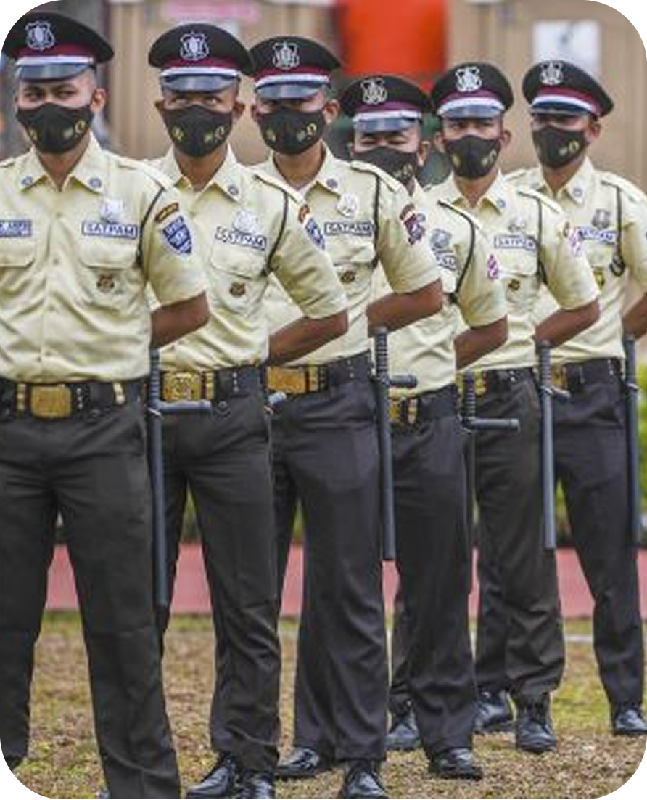

Selamat Datang di POLIJE SIAGA
Polije Siaga hadir sebagai pusat informasi keamanan kampus yang memudahkan civitas akademika dalam melaporkan barang hilang, menemukan barang yang telah dilaporkan, mendapatkan informasi terkait kondisi keamanan kampus, serta mengakses kontak darurat.
Tentang Polije Siaga